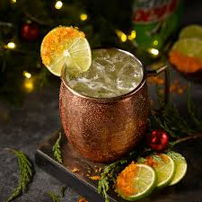
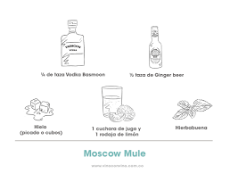

Moscow Mule

Ingredients:
- Vodka 50 ml
- Ginger Beer 150 ml
- Few dashes of ginger bitters
- Crushed Ice 250 ml
Steps:
- Pour the vodka into a metal mug, julep tin or tumbler
- Load up ¾ full with crushed ice, then fill to the top with the ginger beer and stir gently to combine
- Add a few dashes of ginger bitters
- Serve with a sprig of mint to garnish and the lime to squeeze over.
- Now it is ready to be drinked!
- ENJOY

Back to Homepage